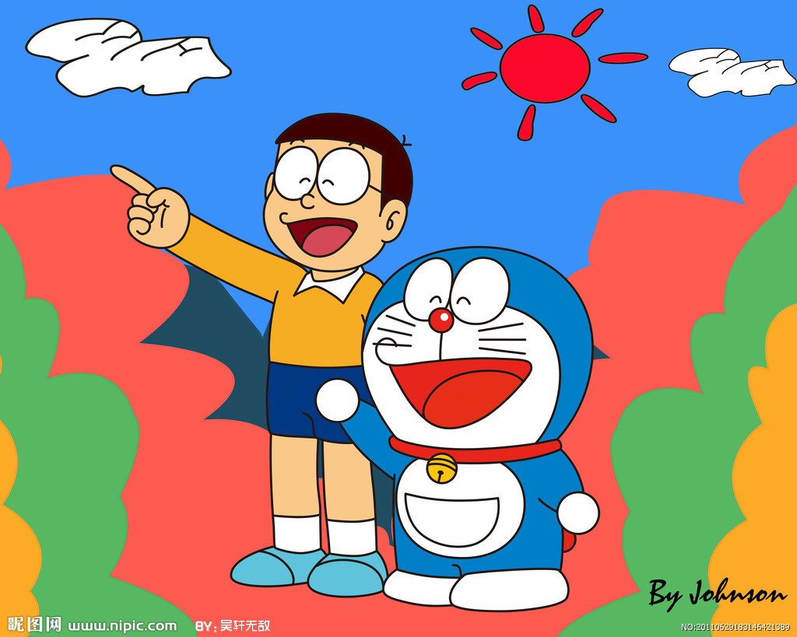

剧情简介
生活在日本东京的野比大雄,是一个学习不上进、目常迷迷糊糊并且饱受同学欺负的男孩。他的性格不仅左右着自己的事业和婚姻,还对未来子孙产生莫大的影响。为此,大雄孙子的孙子世修带着猫型机器人哆啦A梦乘坐时光机突然来访,期望彻底改变大雄及整个家族的命运。
为了什么都做不来的野比大雄,22世纪的玄孙野比世修送了猫型机器人一哆啦A梦来现代。
笨笨的野比大雄原本自己开了间公司,但很不幸的倒闭,之后剩下了一屁股债务,子孙们吃了莫大的苦。于是,野比世修才打算送哆啦A梦到现代,打算改变大雄的未来,并且为哆啦A梦设定了完成程式,如果野比大雄不幸福的话,哆啦A梦就不能回22世纪。
哆啦A梦于是开始勉勉强强的协助野比大雄的目常生活。虽然刚开始不太习惯,但两个人的关系也目渐变的紧密。得知野比大雄的梦想是打算与梦中情人的同班同学源静香结婚以后,哆啦A梦就想尽办法要帮助野比大雄获得静香的芳心。
正当源静香总算答应了野比大雄的求婚的时候,任务完成的哆啦A梦却被完成程式要求,要在48小时内回到22世纪。难道,得到了什么,自然的,也会失去些什么这个命定的预言,没办法被哆啦A梦跟野比大雄突破。面对哆啦A梦即将离开的冲击,野比大雄又该如何自处。
在哆啦A梦的帮助下,大雄不再受到胖虎和小夫等人的欺负,他喜欢美丽的女孩源静香。为了实现和静香结婚的命运,他和哆啦A梦穿越时空,见证了决定人生的最关键的时刻和事件。当大雄慢慢开始变得幸福之际,哆啦A梦也到了必须返回22世纪的时候….